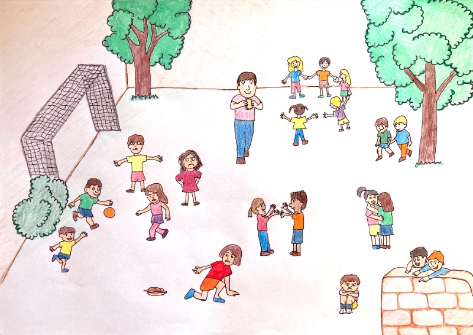

Descripciones, relatos o demostraciones que se representan a través de dibujos, figuras o signos.
Ejemplo:
Los apuntes de Esmeralda son muy gráficos, están llenos de dibujos y signos.
Ilustración
Definición:
Dibujo que adorna un libro u otro documento.
Ejemplo:
Me encanta la ilustración que hay en la portada de este libro.
Textual
Definición:
Que está formado por frases y palabras, formando un texto.
Ejemplo:
El trabajo que mandó el maestro es textual, solo hay que escribir.
Todos tenemos nuestras propias anécdotas y aventuras, historias que nos gusta contar a los demás. Esas historias deben estar ordenadas, empezando por el principio y acabando por el final. Así todo el mundo se enterará a la perfección.
Ahora vas a ver una pequeña historia. No se entiende muy bien porque el libro se ha roto y las hojas se han desordenado. Junto a tu grupo tienes que ordenarla, para que tenga sentido y te enteres de todo.
¡Muy bien! Ya tienes todas las páginas del libro ordenadas ¿Te has fijado en que son muy diferentes unas de otras?
Clavis dice ... ¿El orden es importante?
¿Cuándo te has enterado mejor de la historia del niño? ¿Cuándo las hojas estaban desordenadas? ¿Cuándo las has ordenado?
Como te has dado cuenta, el orden es muy importante al contar o escribir una historia. También lo es cuando haces actividades o tienes que estudiar.
Por eso, antes de hacer una tarea, estudiar, escribir o contar algo, lo mejor es tener muy claro el orden. Así lo que hagas, digas o aprendas tendrá más lógica, te costará menos y tendrás menos equivocaciones.
2. Una imagen vale más que mil palabras
Entre las siguientes tarjetas vas a encontrar ilustraciones con diferentes elementos:
Que está formado por frases y palabras, formando un texto.
Ejemplo:
El trabajo que mandó el maestro sobre Pinocho es textual, solo hay que escribir.
Definición:
Descripciones, relatos o demostraciones que se representan a través de dibujos, figuras o signos.
Ejemplo:
Los apuntes de Esmeralda son muy gráficos, están llenos de dibujos y signos.
3. Una nueva página en la historia
¡Lo lograste! Has conseguido identificar cada ilustración según los elementos que tiene. Ya solo te queda una última cosa. Con tu grupo debes hacer una nueva página de la historia en el cuaderno, usando tanto elementos gráficos como textuales ¡Tú puedes!
Lectura facilitada
¡Tú lo conseguiste!
Tú has contestado las preguntas.
Tú conoces los elementos textuales
Tú conoces los elementos gráficos.
Tú tienes que hacer otra actividad.
Tú trabajas con tus compañeros y compañeras.
Vosotros tenéis que escribir una página de la historia.
La nueva página debe tener elementos textuales.
La nueva página debe tener elementos gráficos.
¡Tú puedes!
Hola de nuevo. No sé si a ti también te pasará pero yo, con cada comienzo de curso, me siento bastante liado con las emociones. Por un lado, me siento muy feliz porque tenía muchas ganas de ver a mis compis. Por otro lado, estoy preocupado y tengo bastantes nervios, porque siempre he escuchado que cuando pasas de curso las cosas se complican y tienes que estudiar más.
Las emociones son muy complicadas pero es muy importante trabajarlas para encontrarte mucho mejor. Por suerte, he encontrado una forma para calmarme y centrarme. ¿Quieres conocerla?
Lectura facilitada
¡Hola!
Yo empiezo un nuevo curso.
Yo siento muchas emociones distintas.
Yo veo otra vez a mis amigos y amigas.
Yo me siento muy feliz.
Yo escucho que el curso es difícil.
Yo escucho que debo estudiar más.
Yo me siento nervioso.
Yo me siento preocupado.
Las emociones son muy complicadas.
Las emociones son lo que sentimos en nuestro cuerpo.
Emoción que siente una persona, de sorpresa, alegría o tristeza, ante un hecho o suceso
Ejemplo:
La nueva sudadera de Claudia causó sensación, era muy original.
Definición:
Acciones organizadas para conseguir un fin u objetivo.
Ejemplo:
La policía tenía un plan para detener a los ladrones.
4. Emociones a montones
Esta actividad la harás de forma individual, pues cada uno siente unas emociones distintas.
Existen varias formas de hacer esta actividad. Elige la opción con la que te sientas más cómodo o cómoda.
Lectura facilitada
Tú sientes muchas emociones.
Tus amigos y amigas tienen emociones.
Cada persona tiene emociones distintas.
Por eso esta actividad es individual.
Tú tienes que hacer esta actividad solo.
Hay varias formas de hacer esta actividad.
Tú tienes que elegir la opción que más te guste.
Opción A. ¿Dónde están las emociones?
Opción B. Cruciemo
Opción C. ¿Qué sienten? ¿Los ayudas?
Opción D. Ponte en su piel
Observa la ilustración. Elige tres de los personajes y escribe en tu libreta qué les ha pasado y cómo crees que se sienten.

Kardia dice ... Reconocer las emociones
¿Conocías el nombre de las emociones que hemos trabajado?
Has visto el miedo, la alegría, la felicidad, la rabia, la tristeza… Éstas son solo unas cuantas de las muchísimas emociones que existen. Por eso, a veces, estamos tan liados que no sabemos lo que nos pasa. Seguro que si intentas recordar, encontrarás muchos más sentimientos y emociones que has sentido a lo largo de tu vida. Más adelante descubrirás el nombre de muchas más.
¡Enhorabuena! Si has llegado hasta aquí, has sido capaz de recordar muchas cosas de las aprendidas en cursos anteriores. ¡Vas genial! Vamos a seguir aprendiendo.
 Definición:
Definición: Definición:
Definición:
 Definición:
Definición: Definición:
Definición: